Sort Sol
-
Kom tæt på de fantastiske flokke med hundredetusinder af stære. -
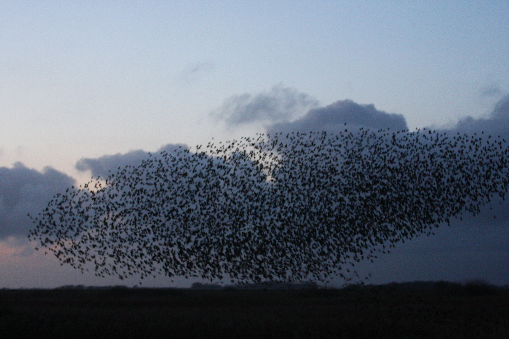 Jens ThomasenStæreflok lige før de siger godnat -
 Jens Thomasen
Jens ThomasenStære i tusindvis på aftenhimlen -
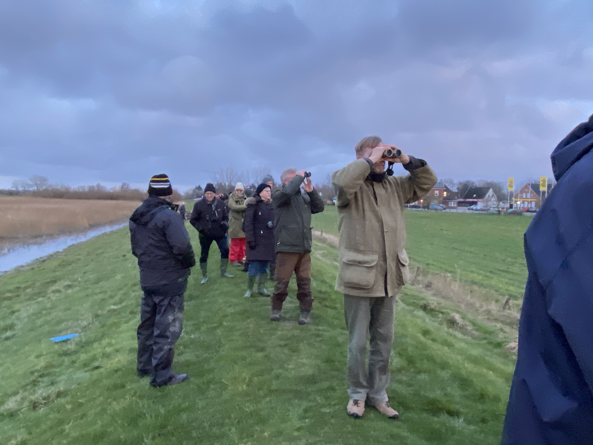 Jens ThomasenSe sort sol på diget
Østersture
-
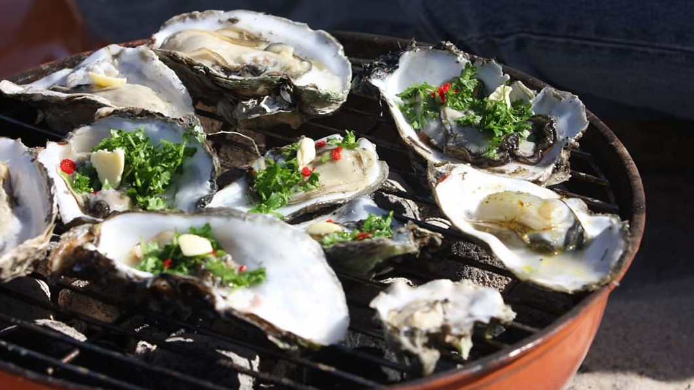 Jan RavnborgOplev vadehavet med tidevandet og pluk friske østers -
 Ulrik Pedersen
Ulrik PedersenDer er fantastiske naturoplevelser på turen -
 Ulrik Pedersen
Ulrik PedersenDe eventyrlystne spiser østers direkte fra havet -
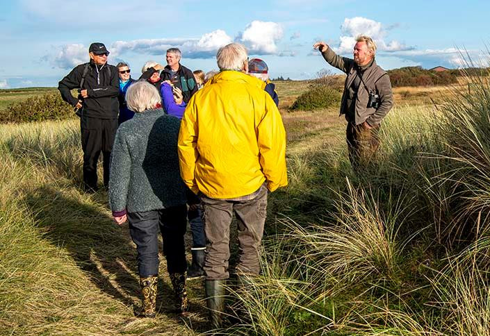 Ulrik PedersenFortællinger om området hører med til turen
Skov & Mose
-

De majestætiske traner er her også i februar -
 Niels Duhn
Niels DuhnMosen byder på den helt specielle rørdrum -
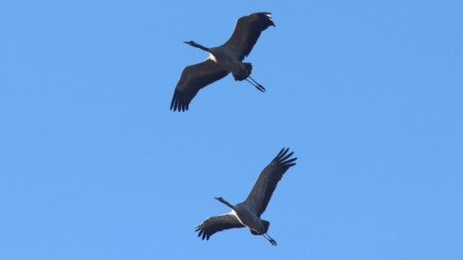 Niels DuhnTo flotte traner over mosen -
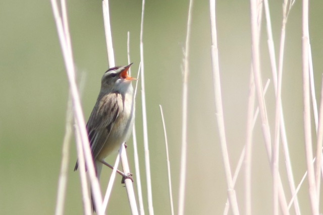 Niels DuhnFå navn på fuglenes sang. Her sivsanger for fuld hals
Solopgang med Ørne
-
 Kurt Vedel Kristensen
Kurt Vedel KristensenHavørn fanger bramgås ved Rømødæmningen -
 Nield Duhn
Nield DuhnUng Havørn ses ofte i området -
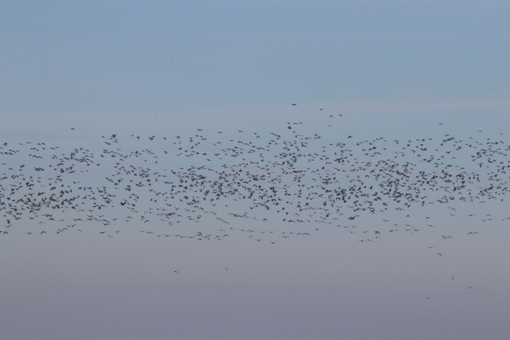 Niels DuhnGæs ses ofte i store flokke -
 Niels Duhn
Niels DuhnBramgæs. Tidligere sjældne, nu omstridt og kilde til klager fra landmænd -
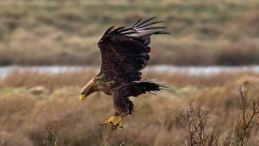 Torben AndersenDer er ofte succes på mogenjagten
Marsken
-
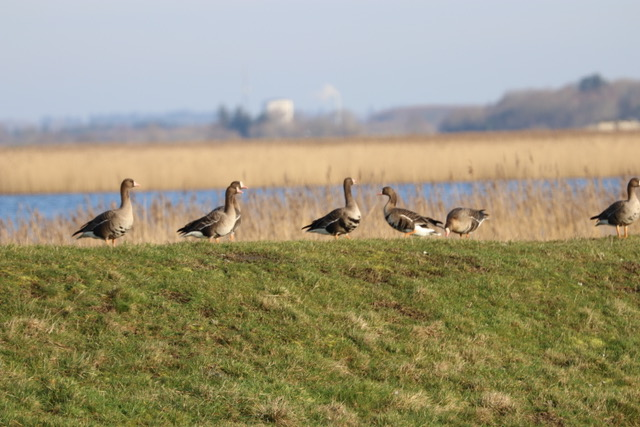 Niels DuhnBlisgæs på et af de mange diger i vadehavsområdet -
 Niels Duhn
Niels DuhnDen store Sølvhejre, speciel for saltvandssøen -
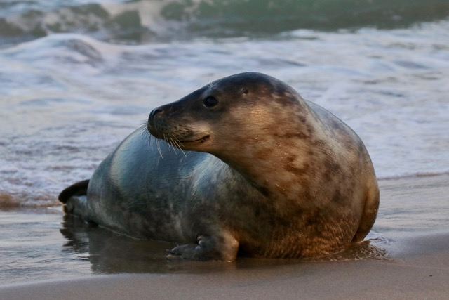 Niels DuhnSpættet sæl - vadehavets vandhund -
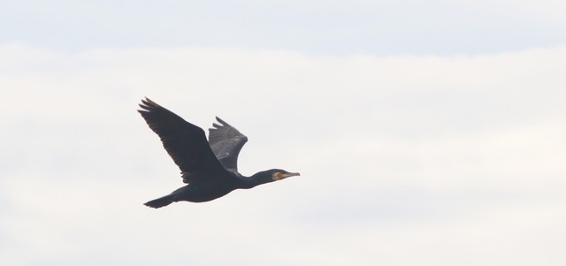 Niels DuhnSkarven er på besøg. Den yngler ikke i området
Individuelle oplevelser
-
 Niels Duhn
Niels DuhnHarer i marsklandskabet -
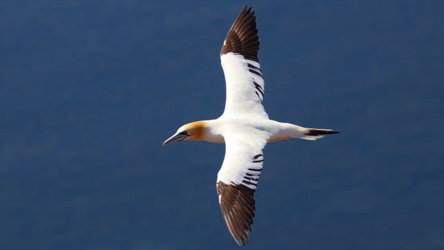 Niels DuhnPå Helgoland kan man se Suler og andre forbjergsfugle helt tæt på, få en større oplevelse med Naturguiden ved jeres side -
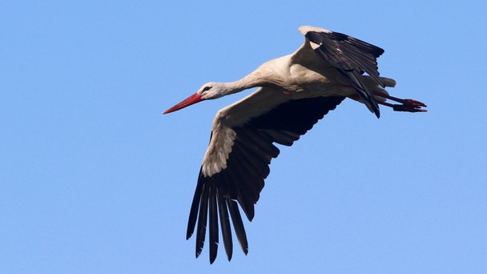 Niels DuhnTag med syd for grænsen og se storkelandsbyen Ved Schlüttsiel i det tyske vadehav kan man opleve store flokke af skestorke